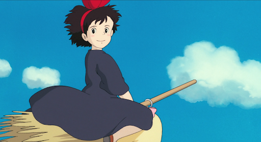

Welcome To My Life
French embroidery
저의 취미 중 하나는 프랑스 자수입니다. 다음은 프랑스 자수의 정의입니다. 프랑스 자수(France-刺繡)는 서양 자수의 기초가 되며, 수법의 종류가 많고 쉽게 익힐 수 있다. 또한 실용적이며 재료와 용구의 준비가 간편하고 응용 범위가 넓다. 바탕감으로는 옥양목·포플린·아마·망사·우단·가죽·비닐 등 바늘이 들어갈 수 있는 것이면 무엇이든 가능하다. 자수용 실로는 면사·모사·레이온사 등이 쓰인다. 프랑스 자수사인 25번사는 가장 가는 면사로 보통 여섯 가닥으로 되어 있으며, 가는 실을 느슨하게 꼬아 합친 실이다.
My Favorites
KiKi's Delivery Service

제가 제일 좋아하는 영화는 마녀 배달부 키키입니다. 다음은 마녀 배달부 키키의 줄거리입니다. 13세가 된 견습 마녀는 어엿한 마녀가 되기 위해서 다른 마을에 가서 1년 동안 부모를 떠나 자립해서 수행해야 하는데, 마침 키키가 13세가 되자 마을을 찾아 여행을 떠나고, 커다란 마을에 도착한다. 하지만 그곳에 마녀를 반겨주는 사람은 없었고 키키는 풀죽어 마을을 헤매다 마음씨 좋은 빵집 주인 오소노를 만나고 그 곳에서 살면서 마녀의 빗자루 타는 능력을 활용해 택배 사업을 시작한다.
한편, 하늘을 나는 것에 관심이 많은 소년 톰보와 자상한 성격의 할머니, 자유분방한 소녀화가 우르슬라등을 만나면서 키키는 점점 성장해 나가는데…